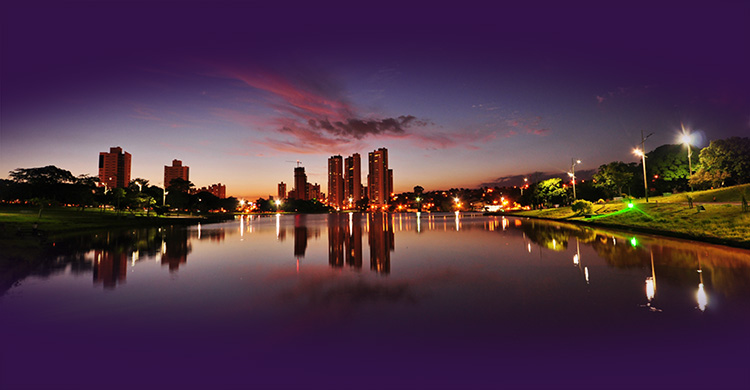

Campo Grande
Campo Grande, conhecida como a cidade morena e cidade dos ipês, possui inúmeras árvores em todo seu território. Além disso a nossa capital é repleta de praças e parque, um Excelente lugar para você adolecente começar a praticar algum tipo de exercício físico.
A cidade está dividida em sete setores sendo eles: Anhanduizinho, Bandeira, Centro, Imbirussu, Lagoa, Prosa e Segredo. Com esses setores, o governo utiliza para organizar as ações esportivas na Capital. Sendo assim, utilizaremos essa divisão das regiões de Campo Grande.
